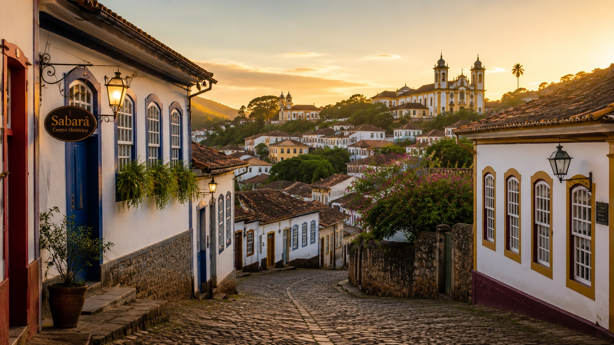
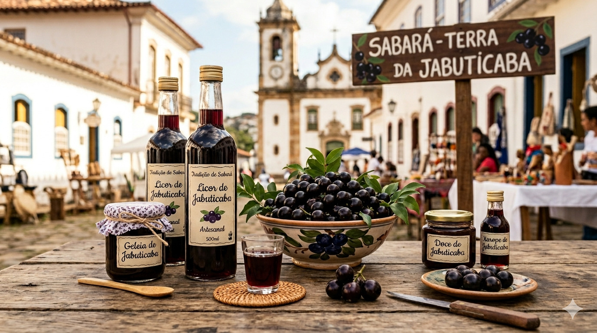

Conheça Sabará
Sabará é uma das cidades históricas mais tradicionais de Minas Gerais, localizada próxima de Belo Horizonte. A cidade encanta visitantes por sua arquitetura colonial, igrejas barrocas, ruas históricas e pela forte tradição cultural mineira.
Além da importância histórica, Sabará também se destaca pela gastronomia típica, principalmente pelos produtos feitos com jabuticaba, fruta que se tornou símbolo da cidade.

🏛️ Turismo Histórico
O centro histórico de Sabará preserva construções antigas do período colonial, tornando a cidade um importante destino para quem gosta de história e cultura mineira.
- Igreja Nossa Senhora do Ó
- Igreja Matriz de Nossa Senhora da Conceição
- Teatro Municipal de Sabará
- Museu do Ouro
- Chafariz do Kaquende
- Centro Histórico
🍇 Gastronomia e Jabuticaba
Sabará é conhecida como a “terra da jabuticaba”. A fruta faz parte da cultura local e movimenta o turismo gastronômico da cidade.
Durante o Festival da Jabuticaba, turistas visitam a cidade para experimentar doces, licores, geleias, vinhos artesanais e diversos produtos feitos com a fruta.
Curiosidade
O Festival da Jabuticaba é um dos eventos mais famosos de Sabará, reunindo gastronomia, música, cultura e artesanato mineiro.

🛍️ Compras e Artesanato
A cidade também se destaca pela venda de produtos artesanais, lembranças históricas e alimentos típicos mineiros.
- Licor de jabuticaba
- Geleias artesanais
- Doces típicos mineiros
- Artesanato regional
- Produtos coloniais
- Souvenirs históricos
🍲 Onde comer em Sabará
Os restaurantes da cidade oferecem pratos típicos da culinária mineira, valorizando receitas tradicionais e sabores regionais.
| Restaurante | Destaque |
|---|---|
| Restaurante Dona Maria do Pompéu | Comida mineira tradicional |
| Alambique & Armazém Jotapê | Produtos artesanais e regionais |
| Quintal do Ouro | Cafeteria e pratos típicos |
| Cozinha da D. Nair | Receitas caseiras mineiras |
📌 Informações rápidas
| Informação | Detalhe |
|---|---|
| Estado | Minas Gerais |
| Tipo de turismo | Histórico, cultural e gastronômico |
| Principal destaque | Jabuticaba e arquitetura colonial |
| Próxima de | Belo Horizonte |
✨ Sabará em uma frase
“Sabará une história, cultura e sabores únicos através da tradição da jabuticaba mineira.”